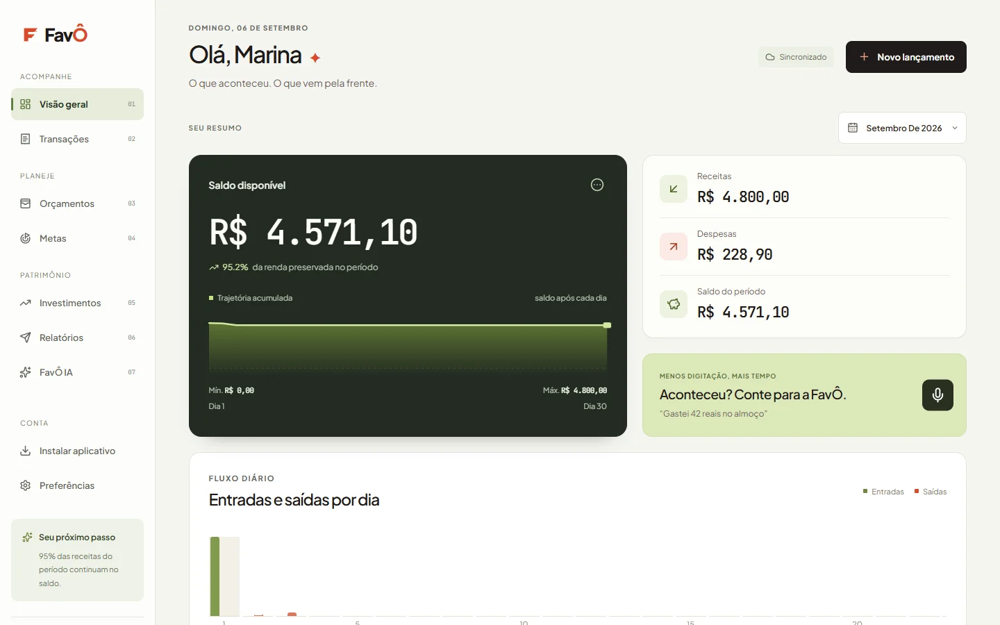
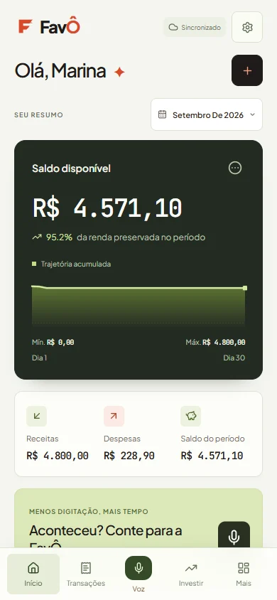

Entenda o agora.
Saldo, receitas e despesas sem adivinhação. Um fluxo por dia mostra para onde seu dinheiro está indo.
MENOS RUÍDO. MAIS POSSIBILIDADES.
Da compra de hoje ao plano de amanhã.
Uma visão clara da sua vida financeira,
no celular e no computador.
01 / DO CAOS À CLAREZA
Pequenos gastos, contas, planos. O FavÔ reúne as peças para você decidir o próximo passo com mais tranquilidade.
Exemplo ilustrativo · não são dados da sua conta.
02 / PENSOU. FALOU. ORGANIZOU.
Conte o que aconteceu. Confira os dados reconhecidos e confirme. Você continua no controle de cada lançamento.
“Gastei 42 reais
no almoço.”
Do seu jeito, com a sua voz.
03 / SUA CONTA ACOMPANHA VOCÊ
Web, Windows e Android, conectados à mesma conta. A sincronização precisa de internet e acesso ao servidor FavÔ.


Capturas e tour do produto · conta de demonstração, sem dados pessoais · vídeo sem áudio.
Saldo, receitas e despesas sem adivinhação. Um fluxo por dia mostra para onde seu dinheiro está indo.
Defina limites por categoria e acompanhe suas metas. Cada pequeno avanço fica visível.
Relatórios por período, PDF, CSV e backup. Seu planejamento também pode chegar por e-mail.
04 / MAIS CONTEXTO. MENOS ACHISMO.
Uma ação não é um CDB. Organize sua carteira com campos específicos, liquidez, vencimento e informações de risco para cada modalidade.
Conhecer investimentos“Qual a diferença entre
liquidez e vencimento?”
Conteúdo educativo, não recomendação individual de investimento. Há riscos de perda. Cotações dependem das fontes e podem ter atraso; a IA depende da disponibilidade do serviço.
05 / A ESCOLHA CONTINUA SUA
Acesso por senha, recuperação de conta e dados separados por usuário no servidor PostgreSQL.
Exporte relatórios em PDF e CSV, envie por e-mail ou guarde um backup dos seus dados.
SEU PRÓXIMO PASSO
Explore a prévia no seu dispositivo. Login e sincronização exigem um servidor configurado.
Uma janela dedicada ao seu planejamento, com lançamentos por voz.
Prévia: requer o servidor FavÔ no próprio computador. Sem assinatura Authenticode; o Windows pode avisar sobre editor desconhecido.
3116ae8a07f346b4b35e54aa082731657772237adad78597acc6ac49e401fca9Registre na hora. Acompanhe seus gastos onde a vida acontecer.
Prévia: requer endereço de servidor configurado e alcançável em Preferências. APK assinado; a instalação fora da Play Store pode exibir alertas.
30ed0a168fcfd90ebded142d738656ffe3298d785d5716ca369b69d150ef72acProjeto nativo para desenvolvedores, atualizado com a nova interface. O acesso web público ainda não está disponível.
Este ZIP não é um aplicativo instalável nem um IPA. A distribuição nativa exige compilação e assinatura Apple apropriadas.
8d3b6cf9667dce77f4e5bd431c1bac656a3f357ca85c890886ef3100eb0b7133